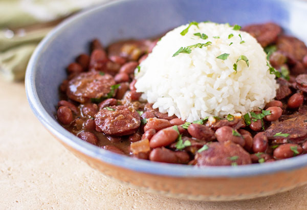

How to Make Red Beans and Rice

A Louisiana Original
A classic cajun recipe straight from the heart of New Orleans.
It takes patience to have it come out just right, but it is a
simple yet delicous meal.
Ingredients
- 1lb Dry Kindey Beans
- 1lb Andouille Suasage, sliced
- 2 cups White Rice
- 1⁄4 cup Olive Oil
- 1 Onion, chopped
- 2tbsp Minced Garlic
- 6 cups Water
- 2 Bay Leaves
- 1tsp each of Cajun Seasoning and Dried Thyme
- 1⁄2tsp Cayenne Pepper
- 1⁄4tsp Dried Sage
Instructions
- Soak beans in pot of water overnight.
- Cook onion and garlic in oil on skillet.
- Rinse beans and cook in large pot with seasonings until boiling.
- Add onion, garlic, and sausage.
- Let simmer for 30 minutes and prep rice.
- Serve over rice as desired.